Hakkında
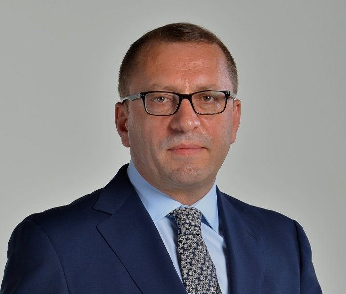
Habertürk.com (HT.com) için ekonomi ağırlıklı yazıyor; sanayi, ulaştırma, savunma, enerji, turizm ve havacılık ana ilgi alanları. Lise yıllarında foto muhabirliğiyle, üniversite yıllarında muhabirlikle başlayan tecrübesi, toplamda 40 yılı aşkın bir birikime uzanıyor. 1998'den bu yana ekranda olan AirPort programının yapımcılığını yapıyor; her Perşembe Bloomberg HT'de yorumcu olarak ekranda yer alıyor. Aynı zamanda bir fotoğraf sanatçısı.
Fotoğrafla Başlayan Gazetecilik Yolculuğu
1968 yılında Erzurum'un Olur ilçesinde doğdu. İlk ve orta öğrenimini Olur'a bağlı Aşağı Karacasu Köyü'nde, lise eğitimini Bursa Otelcilik ve Turizm Meslek Lisesi'nde tamamladı. 1988 yılında Atatürk Üniversitesi Edebiyat Fakültesi'nden mezun oldu.
Gazetecilikle lise yıllarında foto muhabiri olarak tanıştı. Fotoğrafçılık, yalnızca mesleğe giriş kapısı değil, sonraki yıllarda gazetecilik ve seyahat çalışmalarının da ayrılmaz bir parçası oldu.
Profesyonel gazetecilik hayatına 1990 yılında ulusal bir gazetede havalimanı muhabiri olarak başladı. 1994 yılında Türkiye'de ilk kez haftalık "Ulaşım Sayfası"nı hazırladı ve Ekonomi Şef Yardımcılığı görevine getirildi; 1995 yılında Haber Müdürü oldu.
Airport'un Hikâyesi
Televizyon gazeteciliğine 1998 yılında TGRT'de başladı. Aynı yıl kendi formatını geliştirerek hazırladığı havacılık ve turizm programı Airport izleyiciyle buluştu — bugün Türkiye'nin kendi alanındaki en uzun soluklu televizyon programlarından biri.
2000 yılında haber yöneticiliği görevlerinden ayrılarak köşe yazarlığına ve yayın danışmanlığına ağırlık verdi; kurduğu Kaan Film Prodüksiyon bünyesinde Airport'u 2000-2002 yılları arasında NTV ekranlarına taşıdı. 2001 yılında Anadolu Gazeteciler Cemiyeti tarafından "Yılın Yazarı" ödülüne layık görüldü.
Sabah ve ATV Dönemi
2003 yılında Sabah-ATV Grubu'na transfer oldu; Sabah Gazetesi'nde köşe yazarlığının yanı sıra Ekonomi Dergi Grubu Yayın Direktörlüğü görevini üstlendi. Airport bu dönemde ATV ekranlarında yayınlanmaya başladı. Kurduğu Transport ve Global Enerji dergilerini Sabah Dergi Grubu bünyesine taşıdı.
2005 yılında ekonomi dergisi Para'nın Yayın Direktörü oldu, Takvim Gazetesi Ekonomi Müdürlüğü görevini yürüttü ve Şamdan Plus dergisinde seyahat yazıları kaleme aldı.
Habertürk Dönemi
2008 yılında Habertürk'e geçerek Ekonomi Koordinatörü oldu; köşe yazılarını Habertürk'te sürdürmeye başladı ve Airport da Habertürk TV ekranlarına taşındı. 1998 yılında başlayan Airport, 28 yılı geride bırakan yayın hayatıyla Türkiye'nin havacılık alanındaki en uzun soluklu televizyon programlarından biri olarak yayınını sürdürüyor.
Bloomberg HT'nin Türkiye'de yayın hayatına başlamasından bu yana yorumcu olarak ekranlarda yer alıyor; havacılık, ulaşım, enerji, savunma sanayii, teknoloji ve telekomünikasyon alanlarındaki güncel gelişmeleri değerlendiriyor.
Dünyadaki Gelişmeleri Yerinde Takip Ediyor
Gazeteciliğinin ayırt edici özelliklerinden biri, gelişmeleri sahada ve kaynağında takip etmesi. Uzun yıllardır IATA Genel Kurulları ile Farnborough, Paris ve Dubai Airshow gibi dünyanın önde gelen havacılık organizasyonlarını yerinde izliyor; Airbus, Boeing, Embraer gibi üreticilerin tesislerini inceliyor. Enerji alanında petrol ve doğal gazdan nükleer ve yenilenebilir enerjiye, savunma sanayiinde insansız sistemlerden yapay zekâ ve uzay teknolojilerine kadar geniş bir yelpazede haber, araştırma ve analizler yayımlıyor.
Fotoğrafçılık Hiç Bitmedi
Gazeteciliğe foto muhabiri olarak başlayan Şimşek için fotoğrafçılık hiçbir zaman geçmişte kalan bir uğraş olmadı. Meslek hayatı boyunca ziyaret ettiği ülkeleri, şehirleri, kültürleri, insanları ve doğal yaşamı fotoğrafladı; bugün de özellikle seyahat, şehir, doğa, insan ve havacılık alanlarında fotoğraf üretmeye devam ediyor.
Kişisel Kareler
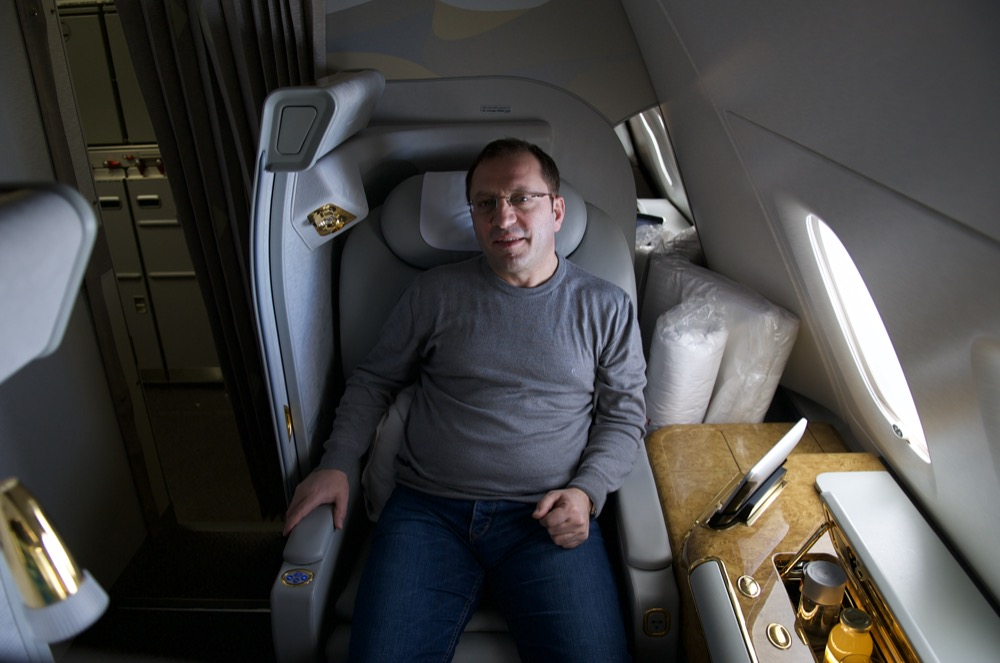
Emirates A380 — Bangkok, 2014
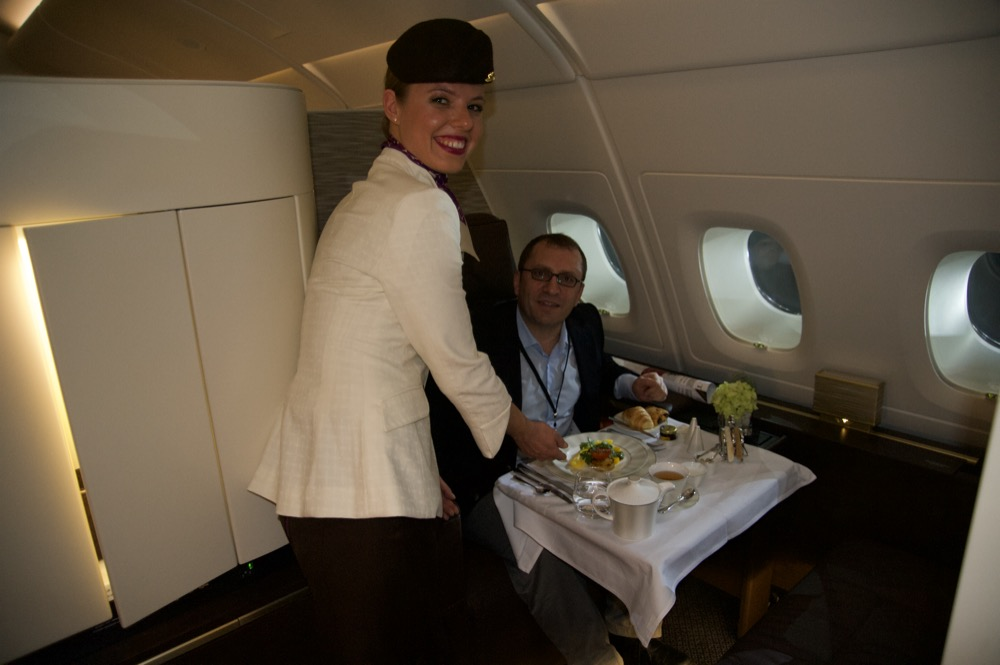
Etihad — Aralık 2014
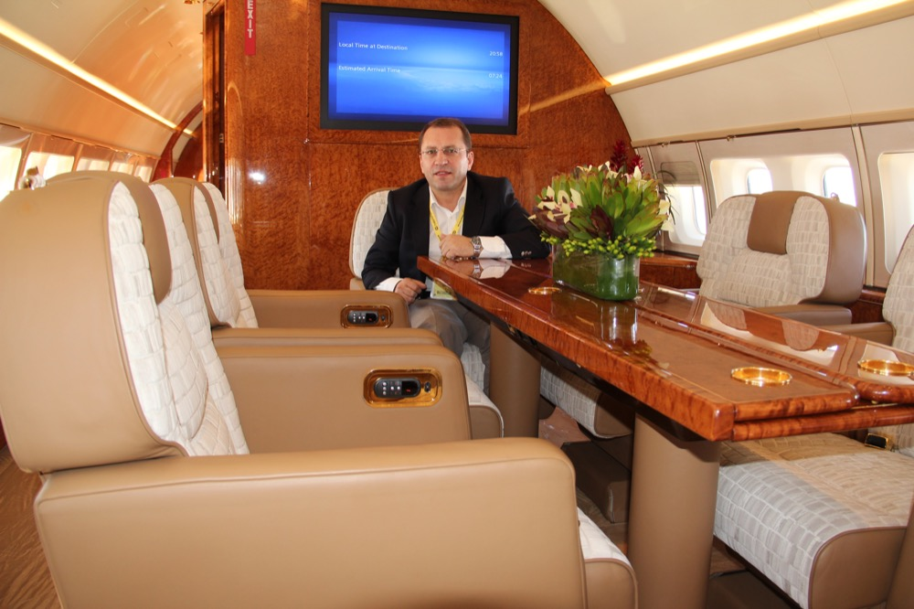
Özel Jet Kabini
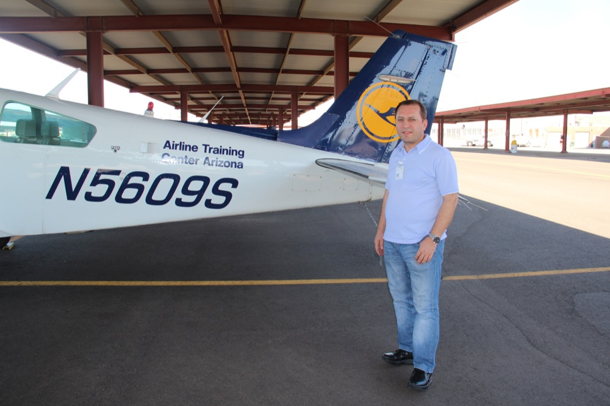
Airline Training Center — Arizona
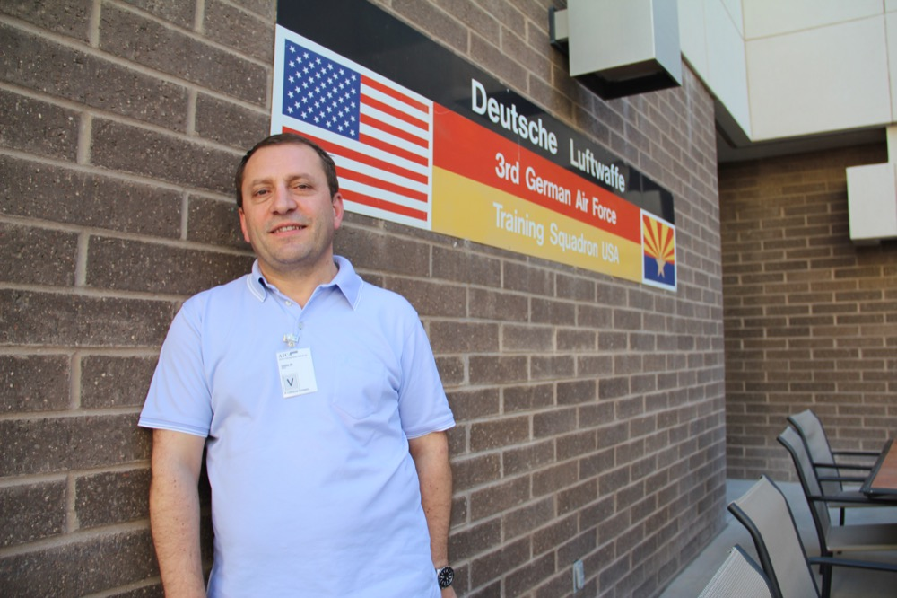
Deutsche Luftwaffe Eğitim Filosu — ABD
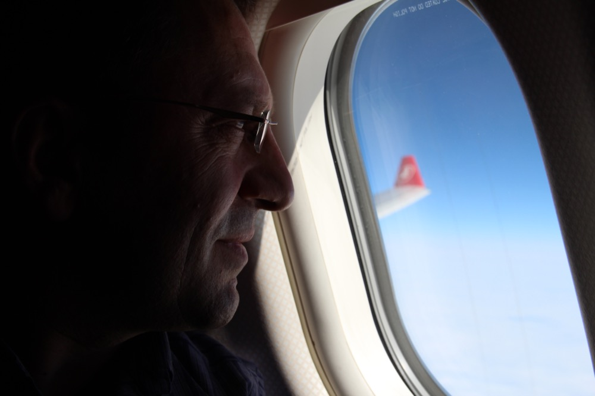
Pencereden — THY
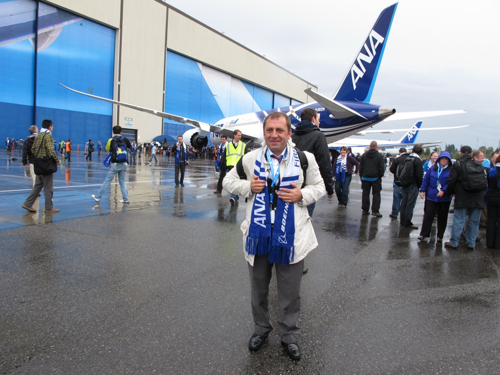
Boeing 787 İlk Teslimat — ANA, Seattle, 2011
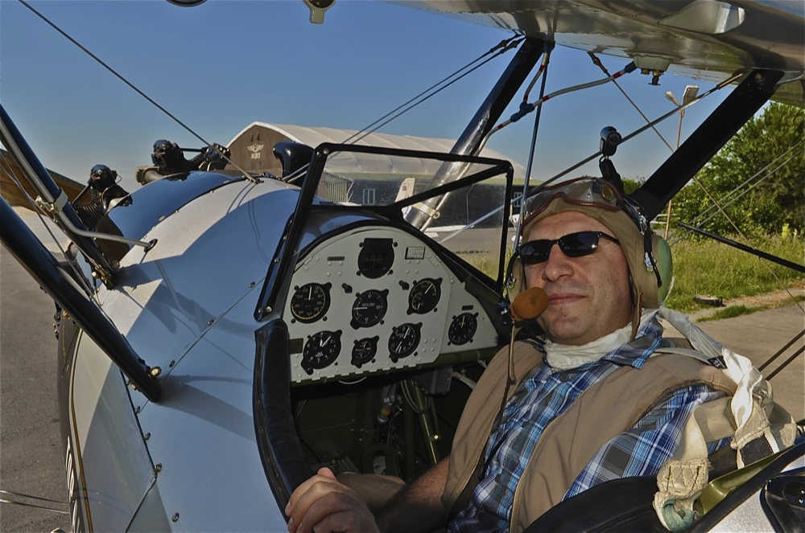
1942 Model Stearman — Haziran 2012
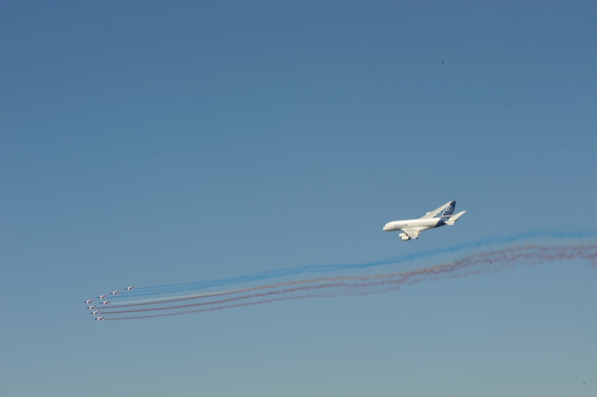
Paris Airshow — Haziran 2017
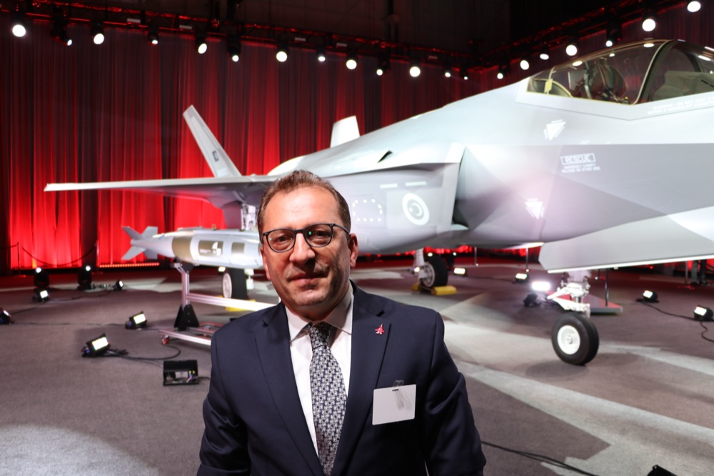
Teksas — Haziran 2018
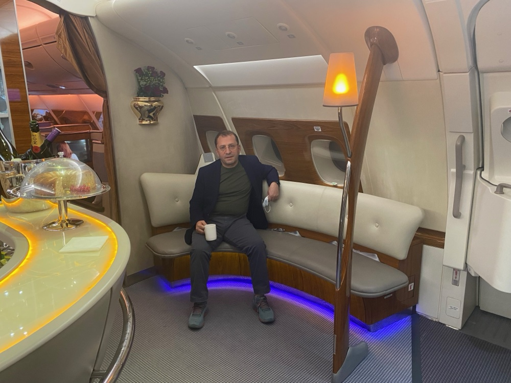
Emirates — Aralık 2022